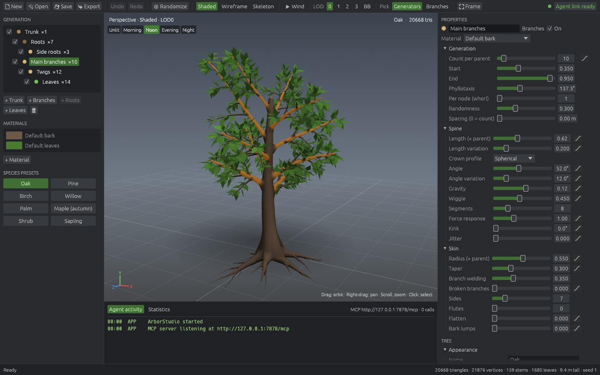

ArborStudio Help
ArborStudio is a procedural tree modeller for games and real-time 3D. You describe a tree with a small set of generators and settings, and ArborStudio grows the trunk, branches, roots and leaves, builds a game-ready mesh with levels of detail, and exports it for Unity, Unreal, Godot or your own engine.

What you can do with ArborStudio
- Start from one of eight species presets or build a tree from scratch with trunk, branch, root and leaf generators.
- Shape every part of the tree: length, angle, gravity, thickness, bark surface, leaf form and more. Most settings can vary along a stem or up the tree with a curve.
- Get one watertight mesh where branches and roots grow out of their parents, with bark texture coordinates that stay continuous across joints.
- Apply materials with colour textures and normal maps, and preview them under five lighting presets.
- Bend growth with forces, trim the crown to a volume, and edit individual branches by hand.
- Animate the tree growing from a shoot to the mature tree, with named stages, and export it as morph targets with one clip per stage.
- Export four mesh levels of detail plus a billboard, collision objects, wind weights and baked ambient occlusion in GLB, OBJ or JSON.
- Let a coding agent build, preview and export trees through the built-in MCP server.
Where to start
Installing and startingDownload ArborStudio and open it for the first time.
Your first treeA ten-minute walkthrough from preset to exported model.
The windowToolbar, panels, viewport navigation and menus.
How trees are builtGenerators, the hierarchy, and how values relate to parents.
ExportingFile formats, levels of detail and importing into engines.
Parameter referenceEvery setting with its range on one page.
Conventions in this help
- Names of buttons, menus and settings appear in bold, as they are written in the window.
- Keyboard shortcuts are written for macOS with ⌘. On Windows and Linux, use Ctrl instead.
- Lengths are in metres. ArborStudio uses a right-handed coordinate system with Y pointing up, the convention of glTF.
- Names in
codestyle are the identifiers used in project files and by the agent tools.